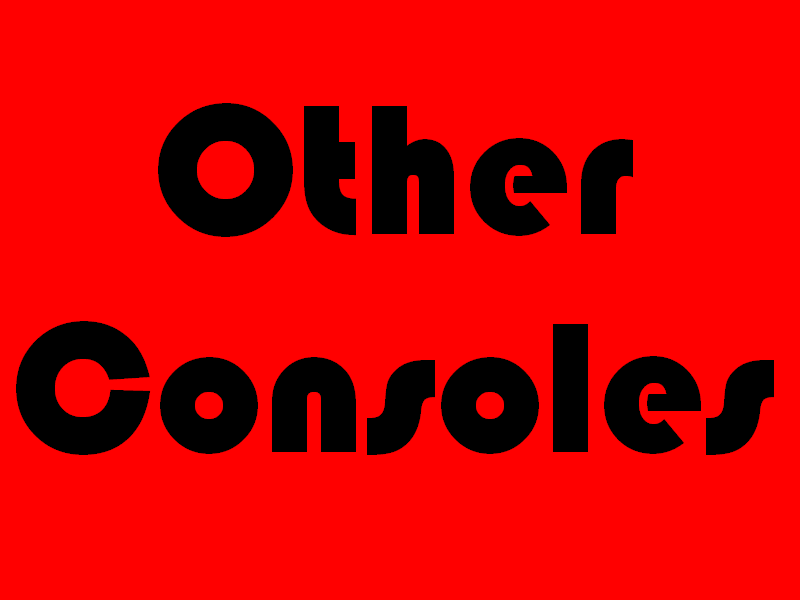

- Has your PS3 malfunctioned? Or gotten the infamous Yellow Light Of Death (YLOD)? Have you decided that it is time to backup all of those precious games that you've spent your hard eaned cash on, and would like to run them straight from the hard drive which also considerably helps with loading times! Well whatever you would like MooseMods is ready to provide, please select Repair, Modification or second-hand consoles depending on your needs.


- Has your Wii faulted in any way? Do you wish to run backed up games straight from an external hard drive or DVD? Or maybe you want to purchase a second-hand Wii for a fraction of its usual price, that can be pre-modded and always comes with our guarantee. Well whatever it is you want Mooseods are here to provide.Please select the service you desire from our options below.

- Has your Xbox 360 fallen victim to the infamous Red Ring of Death (RROD)? Or stopped playing games? Maybe you want to modify it so that it will play backed up games from a DVD? Or maybe you want to purchase a second hand one from us, pre modded and with our Guarantee! Well whatever you want please choose from below.
- At Mooseods we perform all kinds of psp repairs, everything from screen repairs to button replacement! We also have an extensive range of second hand pre-modded consoles that come with our guarantee! Or if you already hve a psp we offer modification services to allow you to play homebrew or backed up games straight from your memory card. Whatever service you require please choose it below.
- Need repairs? Want to have your console modified to play backed up games from a hard drive or DVD? Want to buy a second hand console from us pre-modded with our guarantee? Well whatever service you require we are here to provide. Please choose the service you need from our options below.
- Dropped your expensive DS, cracked the screen, buttons not working? Well we repair all kinds of problems with the DS! Want to run homebrew, backed up games, videos and music straight from a game cartridge? Or maybe you want to purchase a second hand one pre-modded and with our warranty? Please select the service you desire below.

- Is your console not listed above? Dont worry! We have only listed what we feel are the most common consoles out there. If you require a repair or a mod to one of your consoles but dont see it listed above please select the button below which will allow you to contact us and discuss your request.
